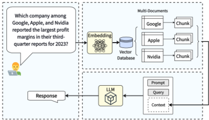
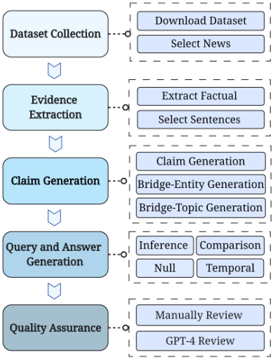
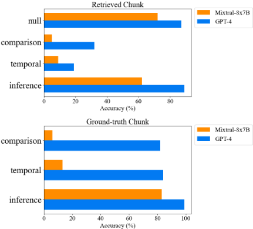

MultiHop-RAG：面向多跳查询的检索增强生成（RAG）基准测试
论文指出真实 RAG 场景中用户查询常需跨多篇文档检索并综合推理（multi-hop query），而现有 RAG 基准（如 RGB、RECALL）只覆盖单条证据即可回答的简单查询。作者构建了 MultiHop-RAG 数据集：以 2023 年 9-12 月发布的英文新闻（晚于主流 LLM 知识截止时间，避免模型靠训练知识作答）为知识库，用 GPT-4 通过证据抽取、claim 改写、bridge-entity/bridge-topic 桥接，自动生成 Inference、Comparison、Temporal、Null 四类多跳查询及配套证据与标准答案。两组实验显示：最优 embedding 模型加 Reranker 后 Hits@10 仅 0.7467；即使给定 ground-truth 证据，GPT-4 准确率也只有 0.89，开源模型 Llama2-70B 与 Mixtral-8x7B 不足 0.4。结论是现有 RAG 在多跳检索与推理两端均不达标，数据集与实现已开源，可作为评测和改进 RAG 系统的资源。
现有 RAG 系统难以回答需要从多篇文档中检索并推理多条证据的 multi-hop 查询；同时现有 RAG 基准（RGB、RECALL 等）只评测单证据查询，缺乏专门面向多跳查询、同时覆盖检索与生成两端评测的基准数据集。
构建 MultiHop-RAG 基准数据集并做两组基准实验。数据集构建：以 mediastack 英文新闻（609 篇，平均 2,046 tokens，发布时间晚于 ChatGPT/LLaMA 知识截止日期）为知识库；先用语言模型抽取事实句作为证据，再用 GPT-4 将证据改写为无歧义的 claim 并标注 bridge-entity/bridge-topic，按桥接分组（每组 2-4 条 claim）生成 Inference、Comparison、Temporal、Null 四类多跳查询与答案，最后结合人工抽查与 GPT-4 规则校验做质量保证。评测：基于 LlamaIndex 实现 RAG 系统（256 token 分块、top-K 余弦相似度检索），实验一比较多种 embedding 模型（ada、voyage-02、llm-embedder、bge-large-en-v1.5、jina-embeddings-v2、e5-base-v2、instructor-large）及 bge-reranker-large Reranker 的检索质量（MAP@K、MRR@K、Hit@K）；实验二在检索文本与 ground-truth 证据两种设定下评测 GPT-4、GPT-3.5、Claude-2、Google-PaLM、Llama2-70B、Mixtral-8x7B 的回答准确率。
检索实验：使用 Reranker 后最高 Hits@10 仅 0.7467，Hits@4 降至 0.6625，表明直接相似度匹配难以检索多跳查询所需的全部证据
生成实验（输入检索到的 top-6 chunks）：GPT-4 准确率仅 0.56
生成实验（输入 ground-truth 证据）：GPT-4 达 0.89，Google-PaLM 0.74，Mixtral-8x7B 0.36，Llama2-70B 0.32
各模型对 Null query 相对稳健，较能识别知识库无法回答的查询；Mixtral-8x7B 在逻辑否定处理与时序排序上错误较多，导致 comparison 与 temporal 查询表现差
数据集统计：约 88% 为非 Null 查询；约 42%/30%/15% 的查询分别需要 2/3/4 条证据
据作者所知是首个专注 multi-hop 查询的 RAG 基准数据集，同时包含知识库、多跳查询、标准答案与配套证据。与 RGB/RECALL（单证据、偏生成评测）、FEVER/SciFact（单跳 claim）、HoVer（给定文章、无 LLM 生成评测）、HotpotQA 等（Wikipedia 与 LLM 训练数据重叠、不强调从大知识库中检索）相比，本文采用知识截止日期之后的新闻语料避免数据泄漏，并将检索评测与生成评测纳入统一框架。
相关度级别：high
命中能力域：3.1 上下文工程与记忆 | 3.5 评测与可靠使用
理由：直接命中团队两个核心能力域：3.1 的 RAG/检索增强与上下文组织（多跳查询正是知识库问答中检索集组织与上下文窗口受限的真实痛点），以及 3.5 的评测基准与可靠性（含 Null query 防幻觉评测）。团队构建知识库问答等 RAG 应用，用户问题天然是多跳的；论文给出的 embedding/Reranker 选型对比数据、检索与生成分离的评测方法，以及用 GPT-4 自动构造多跳评测集的流水线，都可直接用于团队 RAG 系统的评测、选型与迭代。论文还把 LLM-based Agent 自动规划执行多跳查询列为改进方向，与团队 3.3 方向衔接。
建议动作：深入精读并做内部分享
arXiv:2401.15391v1 [cs.CL] 2024年1月27日
Yixuan Tang 和 Yi Yang
香港科技大学 {yixuantang,imyiyang}@ust.hk
检索增强生成（Retrieval-Augmented Generation, RAG）通过检索相关知识来增强大语言模型（Large Language Model, LLM），在缓解 LLM 幻觉和提升响应质量方面展现出可观的潜力，从而促进了 LLM 在实践中的广泛采用。然而，我们发现现有的 RAG 系统在回答多跳查询（multi-hop queries）方面能力不足，这类查询需要对多条支持证据进行检索和推理。此外，据我们所知，目前尚无专注于多跳查询的 RAG 基准测试（benchmark）数据集。在本文中，我们构建了一个新颖的数据集 MultiHop-RAG，它由一个知识库、大量多跳查询、这些查询的标准答案（ground-truth answers）以及相关支持证据组成。我们详细介绍了构建该数据集的过程，使用一个英文新闻文章数据集作为底层 RAG 知识库。我们通过两个实验展示了 MultiHopRAG 的基准测试效用。第一个实验比较了不同的嵌入模型（embedding models）在为多跳查询检索证据时的表现。在第二个实验中，我们考察了多种最先进的 LLM（包括 GPT-4、PaLM 和 Llama2-70B）在给定证据的情况下推理和回答多跳查询的能力。两个实验均表明，现有 RAG 方法在检索和回答多跳查询方面表现不佳。我们希望 MultiHop-RAG 能成为社区开发有效 RAG 系统的宝贵资源，从而进一步促进 LLM 在实践中的采用。MultiHopRAG 数据集及所实现的 RAG 系统已公开发布于 https://github.com/yixuantt/MultiHop-RAG/ 。
以 ChatGPT 为代表的大语言模型（LLM）的出现催生了广泛的创新，为智能聊天机器人及其他自然语言处理（NLP）应用提供了动力（OpenAI, 2023）。其中一个颇具前景的应用是检索增强生成（RAG）（Asai et al., 2023），它在生成回答之前，通过引用 LLM 训练数据源之外的外部知识库来优化大语言模型的输出。RAG 能够改善 LLM 的回答（Borgeaud et al., 2022），同时减少幻觉的发生，从而提升模型的可信度（Gao et al., 2023）。诸如 LlamaIndex（Liu, 2022）和 LangChain（Chase, 2022）等基于 LLM 的框架，专门用于支持 RAG 流水线。

在真实世界的 RAG 应用中，用户的查询往往需要从多个文档中检索证据并对其进行推理，这一过程被称为多跳查询（multi-hop query）。例如，考虑使用财务报告数据库进行财务分析。财务分析师可能会查询：“在 Google、Apple 和 Nvidia 三家公司中，哪家公司在 2023 年第三季度报告中报告了最高的利润率？”或者询问某家特定公司随时间推移的表现，例如：“Apple 过去三年的销售趋势如何？”这些查询需要来自多个文档的证据才能构建答案。由于此类查询具有多面性，涉及来自不同来源的信息，传统的相似度匹配方法（如查询与财务报告文本块嵌入之间的余弦相似度）可能无法产生最优结果。我们在图 1 中展示了这一多跳检索过程。
| News source | Fortune Magazine | The Sydney Morning Herald |
|---|---|---|
| Evidence | Back then, just like today, home prices had boomed for years before Fed officials were ultimately forced to hike interest rates aggressively in an attempt to fight inflation. | Postponements of such reports could complicate things for the Fed, which has insisted it will make upcoming decisions on interest rates based on what incoming data say about the economy. |
| Claim | Federal Reserve officials were forced to aggressively hike interest rates to combat inflation after years of booming home prices. | The Federal Reserve has insisted that it will base its upcoming decisions on interest rates on the incoming economic data. |
| Bridge-Topic Bridge-Entity | Interest rate hikes to combat inflation Federal Reserve | Interest rate decisions based on economic data Federal Reserve |
| Query | Does the article from Fortune suggest that the Federal Reserve's interest rate hikes are a response to past conditions, such as booming home prices, while The Sydney Morning Herald article indicates that the | Does the article from Fortune suggest that the Federal Reserve's interest rate hikes are a response to past conditions, such as booming home prices, while The Sydney Morning Herald article indicates that the |
| Answer | Federal Reserve's future interest rate decisions will be Yes | based on incoming economic data? |
| News source | Fortune Magazine | The Sydney Morning Herald |
然而，现有的 RAG 基准测试（benchmark），如 RGB（Chen et al., 2023）和 RECALL（Liu et al., 2023），主要评估的是查询答案可以仅通过单条证据检索并求解的简单情形。这些基准测试均未评估 LLM 针对复杂多跳查询的检索与推理能力。为了弥补这一空白，并使 RAG 基准测试更贴近真实世界场景，本文提出了 MultiHop-RAG。据我们所知，MultiHop-RAG 是首批专门聚焦于多跳查询的 RAG 数据集之一。
基于真实世界场景中常见的 RAG 查询，我们首先将多跳查询划分为四种类型：推理查询（Inference query）、比较查询（Comparison query）、时序查询（Temporal query）和空查询（Null query）。前三种类型——推理、比较和时序——需要从多个来源检索并分析证据，涵盖诸如推断关系、比较数据点以及按时间顺序排列事件等任务。空查询则代表查询无法从知识库中推导出来的情形。这一类别对于评估当检索到的文本缺乏相关性时，LLM 是否可能对多跳查询产生幻觉性回答至关重要。
我们使用一组新闻文章构建 RAG 知识库。随后，我们以 GPT-4 作为数据生成器，通过一套详尽的流程构建了多样化的多跳查询集合，其中每条查询都需要对多个文档进行检索与推理。查询构建的一个示例如表 1 所示。首先，我们从每篇新闻文章中提取事实性句子作为证据。例如，从某篇文章中提取的一条证据可能是：“当年与今天一样，房价已经繁荣上涨了多年，随后美联储官员最终被迫激进加息，试图以此对抗通货膨胀。”其次，我们将每条证据输入 GPT-4，提示其将该证据改写为一条论断（claim）。该论断通过经过消歧的主题（topic）和实体（entity）加以明确。例如，GPT-4 可能把上述证据改写为：“在房价多年繁荣之后，美联储官员被迫激进加息以对抗通货膨胀”，并将“为对抗通货膨胀而加息”（Interest rate hikes to combat inflation）识别为主题，将“美联储”（Federal Reserve）识别为实体。这些主题和实体充当构建多跳查询的桥梁，因此被称为桥接主题（bridge-topic）或桥接实体（bridge-entity）。接下来，我们使用 GPT4 生成与相同桥接主题或桥接实体相关的具体多跳查询，并附上正确答案。最后，我们执行一个验证步骤以确保数据质量。
我们利用一个基于 LlamaIndex（Liu, 2022）实现的 RAG 系统，通过两个实验展示了 MultiHop-RAG 的基准测试能力。第一个实验对不同嵌入（embedding）模型在为多跳查询检索相关证据方面的表现进行了比较。在第二个实验中，我们评估了多种最先进的 LLM（包括 GPT-4、GPT-3.5、PaLM、Claude-2、Llama2-70B 和 Mixtral-8x7B）在提供检索文本的情况下对多跳查询进行推理和回答的能力。两项实验的结果均表明，当前的 RAG 实现不足以有效地检索和回答多跳查询。我们公开发布了这一具有挑战性的 MultiHop-RAG 数据集，希望它能成为社区开发和基准测试 RAG 系统的宝贵资源，从而在实践中释放生成式 AI 的巨大潜力。
在 RAG 应用中，我们利用一个外部语料库（记为 D），它由多个文档组成，并充当知识库。该语料库中的每个文档（表示为 d i ∈ D）都被切分为一组文本块（chunk）。这些文本块随后使用嵌入模型被转换为向量表示，并存储在嵌入数据库中。给定用户查询 q，系统通常会检索出与该查询最匹配的 top-K 个文本块。这些文本块构成查询 q 的检索集合，表示为 R q = { r 1 , r 2 , ..., r K }。检索到的文本块与查询以及一个可选的提示（prompt）组合在一起，随后被输入到大语言模型（LLM）中以生成最终答案，其格式为：LLM ( q, R q , prompt ) → answer 。
我们将多跳查询（multi-hop query）定义为需要检索并对多份支持性证据进行推理才能给出答案的查询。换言之，对于一个多跳查询 q，检索集合 R q 中的文本块共同为 q 提供答案。例如，查询“在 Google、Apple 和 Nvidia 三家公司中，哪家公司在 2023 年第三季度报告中报告的利润率最高？”需要：1) 从这三家公司的报告中检索与利润率相关的证据；2) 通过对检索到的多份证据进行比较和推理来生成答案。这与单跳查询（single-hop query）不同，例如“Google 在 2023 年第三季度报告中的利润率是多少”，这类查询的答案可以直接从单份证据中得出。
基于真实世界 RAG 系统中常用的查询，我们识别出四种类型的多跳查询。针对每种类型，我们在一个金融 RAG 系统的语境下给出一个假设性查询，该系统的知识库由一组年度报告构成。
推理查询（inference query）：对于此类查询 q，答案是通过对检索集合 R q 进行推理而推导得出的。推理查询的一个示例可能是：哪份报告讨论了 Apple 的供应链风险，是 2019 年年度报告还是 2020 年年度报告？
比较查询（comparison query）：对于此类查询 q，答案需要对检索集合 R q 中的证据进行比较。例如，一个比较查询可能会问：Netflix 和 Google 哪家公司在 2023 年报告了更高的营收？"
时序查询（temporal query）：对于此类查询 q，答案需要对检索到的文本块的时序信息进行分析。例如，一个时序查询可能会问：Apple 是在第 5 代 iPad Pro 发布之前还是之后推出 AirTag 追踪设备的？
空查询（null query）：对于此类查询 q，无法从检索集合 R q 中推导出答案。我们纳入空查询是为了评估生成质量，尤其是幻觉问题。对于空查询，即使提供了检索集合，LLM 也应当给出空响应，而不是通过幻觉生成一个答案。例如，假设 ABCD 是一家不存在的公司，一个空查询可能会问：ABCD 公司在其 2022 年和 2023 年年度报告中报告的销售额是多少？
处理多跳查询的检索增强生成（RAG）系统可以从两个关键方面进行评估：检索评估和生成评估。
检索评估：显然，检索集合 R q 的质量决定了最终的生成质量。我们将检索到的集合与每个查询相关联的真实证据（ground truth）进行比较，空查询除外，因为它们没有可供推导的证据。假设检索返回前 topK 个文本块，即 |R q | = K，我们采用的检索评估指标包括前 K 平均精度均值（MAP@K）、前 K 平均倒数排名（MRR@K）和前 K 命中率（Hit@K）。MAP@K 衡量所有查询在 top-K 检索上的平均精度。MRR@K 在考虑 top-K 检索集合的前提下，计算每个查询首个相关文本块倒数排名的平均值。Hit@K 指标衡量出现在 top-K 检索集合中的证据所占的比例。
响应评估：由于多跳查询需要对多个检索到的文本块进行推理，我们还可以通过将 LLM 的响应与查询的真实答案进行比较，来评估 LLM 的推理能力。

在本节中，我们详细介绍 MultiHop-RAG 数据集的构建过程。具体而言，我们描述了创建一组多跳查询的过程，以及从新闻文章集合中导出的相应真实证据集和答案。
步骤 1：数据集收集。我们使用 mediastack API 1 下载新闻数据集，这是一个提供全球新闻数据的 REST API 接口。新闻数据源由多个英文网站组成，涵盖一系列新闻类别：娱乐、商业、体育、科技、健康和科学。为了模拟真实世界的检索增强生成（RAG）场景——在此类场景中，知识库数据（例如企业内部数据）可能与大语言模型（LLM）的训练数据不同——我们选取了 2023 年 9 月 26 日至 2023 年 12 月 26 日之间发布的新闻文章。截至撰写本文时，这一时间段超出了部分广泛使用的 LLM（包括 ChatGPT 和 LLaMA）的知识截止日期。这一选择也有助于排除底层 LLM 曾接触过这些新闻文章的可能性。我们仅保留 token 长度大于或等于 1,024 的文章。每篇新闻文章都配有元数据，包括标题、发布日期、作者、类别、URL 和新闻来源。
1 https://mediastack.com/
步骤 2：证据抽取。对于每篇文章，我们使用一个经过训练的语言模型 2 抽取事实性或观点性句子。这些事实性句子随后被用作回答多跳查询的证据。我们仅保留其所含证据可能与其他新闻文章存在关键词重叠的新闻文章。这使我们随后能够创建答案证据来自多个来源的多跳查询。
步骤 3：声明（Claim）、桥接实体（Bridge-Entity）与桥接主题（Bridge-Topic）生成。我们的目标是使用 GPT-4 基于证据集自动生成高质量的多跳查询。然而，由于语言结构不一致，从步骤 2 获得的原始证据并不适合用于查询生成。例如，某些证据使用代词指代主语，而文本中缺少实际实体。为解决这一问题，我们在给定原始证据及其上下文的情况下，使用 GPT-4 对证据进行改写，并将改写后的结果称为声明（claim）。为确保生成的声明与证据之间的一致性，我们进一步使用 UniEval（Zhong et al., 2022）框架进行事实核查，以验证证据与声明之间的对齐程度。附录 A 给出了用于 GPT-4 生成声明的提示（prompt）。
桥接实体与桥接主题：跨多条证据共享的实体或主题被称为桥接实体（bridge-entity）或桥接主题（bridge-topic）。这些桥接实体或桥接主题可用于链接不同的证据片段，而多跳查询的答案正是从这些证据中推导得出的。例如，在诸如“Google 发布其 2023 年第三季度业绩，详细展示了其财务表现概览，包括营收增长、利润率”这样的声明中，术语“利润率”（profit margin）可被视为桥接主题，而术语"Google"可被视为链接不同证据片段的桥接实体。我们提示 GPT-4 识别每条声明中的桥接实体和桥接主题。附录 A 还给出了用于 GPT-4 进行桥接生成的提示词。
步骤 4：查询与答案生成。在这一步中，我们利用桥接实体或桥接主题来生成多跳查询。具体而言，我们首先将具有相同桥接实体或桥接主题的声明归入一个声明集合。我们将声明集合限制为至少包含两条声明、但不超过四条声明。对于每种查询类型，我们将声明集合输入 GPT-4，并通过一条指令提示其生成一个包含来自每条声明信息的查询。下面，我们解释不同多跳查询类型的具体规范。在构建每个查询时，我们还会包含支持性证据所关联的新闻文章的来源，以模拟真实世界的检索增强生成（RAG）场景。附录 A 给出了用于 GPT-4 进行查询生成的提示词。
2 https://huggingface.co/lighteternal/fact-or-opinion-xlmr-el
推理查询（Inference Query）：这类查询通过综合多条声明中对桥接实体的各种描述来构建，其最终答案是对该实体本身的识别。
比较查询（Comparison Query）：这类查询旨在比较与桥接实体或主题相关的相似之处与差异。此类查询所得的答案通常是基于比较得出的明确"yes"（是）或"no"（否）。
时序查询（Temporal Query）：这类查询探索跨不同时间点的事件时间顺序。此类查询的答案通常是"yes"或"no"，或者是单个时间指示词，例如"before"（之前）或"after"（之后）。
空查询（Null Query）：空查询是指其答案无法从检索到的集合中推导得出的查询。为了创建空查询，我们使用现有桥接实体中不存在的实体来生成多跳查询。为了增加复杂性，我们在构建这些问题时还加入了虚构的新闻来源元数据，以确保这些问题不会引用知识库中任何与上下文相关的内容。空查询的答案应为"insufficient information"（信息不足）或类似表述。
步骤 5：质量保证。最后，我们采用两种方法来确保数据集的质量。首先，我们对生成的多跳查询、其对应的证据集以及最终答案的子集样本进行人工审查。人工检查的结果表明数据具有很高的准确性和数据质量。其次，我们利用 GPT-4 按照以下标准对数据集中的每个示例进行评估：1）生成的查询在构建答案时必须利用所有提供的证据；2）查询应仅基于所提供的证据即可回答；3）对生成查询的回答应为单个单词或特定实体；4）查询必须符合其指定的查询类型。
| Category | Avg. Tokens | Entry Count |
|---|---|---|
| technology | 2262.3 | 172 |
| entertainment | 2084.3 | 114 |
| sports | 2030.6 | 211 |
| science | 1745.5 | 21 |
| business | 1723.8 | 81 |
| health | 1481.1 | 10 |
| total | 2046.5 | 609 |
| Category | Avg. Tokens | Entry Count |
| Query Category | Entry Count | Percentage |
|---|---|---|
| Inference Query | 816 | 31.92% |
| Comparison Query | 856 | 33.49% |
| Temporal Query | 583 | 22.81% |
| Null Query | 301 | 11.78% |
| Total | 2,556 | 100.00% |
| Query Category | Entry Count | Percentage |
The MultiHop-RAG dataset contains six different types of news articles, covering 609 distinct news, with an average of 2,046 tokens. The distribution of the news categories is shown in Table 2. MultiHopRAG contains four types of multi-hop queries and the distribution of these queries is shown in Table 3. In total, about 88% of queries in the dataset are non-null queries where answers can be retrieved and reasoned from the knowledge base. In addition, the form of queries exhibits considerable diversity. Approximately 27% of interrogative queries start with "does," around 15% initiate with "what," a similar proportion start "which," and 14% begin with "who," with the remainder incorporating a small percentage of other interrogative words such as "when." Moreover, the number of evidence required to answer a multi-hop query varies. Table 4 shows the distribution of evidence numbers for each query in the dataset. Around 42% of queries can be answered using two pieces of evidence, while approximately 30% and 15% of queries can be answered using three or four pieces of evidence, respectively.
MultiHop-RAG 可以作为各种检索增强生成（RAG）相关任务的基准测试（benchmark）。广义而言，RAG 相关任务可以分为检索相关任务和生成相关任务。检索相关任务侧重于从知识库中检索相关文本，而生成相关任务侧重于根据检索到的文本生成高质量的回复。在本节中，我们针对每类任务分别展示两个可以应用 MultiHop-RAG 的用例。
| Num. of Evidence Needed | Count | Percentage |
|---|---|---|
| 0 (Null Query) | 301 | 11.78% |
| 2 | 1078 | 42.18% |
| 3 | 779 | 30.48% |
| 4 | 398 | 15.56% |
| Total | 2,556 | 100.00% |
| Num. of Evidence Needed | Count | Percentage |
底层大语言模型（LLM）在检索增强生成（RAG）系统的响应生成中起着至关重要的作用。在本实验中，我们在两种不同的设置下评估所生成响应的质量。在第一种设置中，我们采用性能最佳的检索模型，即表 5 所示的 voyage-02 结合 bge-reranker-large，来检索 top-K 文本，然后将其输入 LLM。在第二种设置中，我们使用与每个查询相关联的真实证据（ground-truth evidence）作为提供给 LLM 的检索文本。该设置代表了测试 LLM 响应能力的性能上限，因为它使用的是真实证据。
实验设置：在第一个实验中，我们检索 top-6 个文本块，使检索文本的总长度不超过 2,048。实验中对 MultiHop-RAG 中的所有查询进行了测试。在第二个实验中，由于空查询（null query）没有相关联的证据，我们在实验中排除了这类查询。对于实验中使用的 LLM，我们考虑了最先进的商业模型，包括 GPT-4 (OpenAI, 2023)、GPT-3.5、Claude-2 (Anthropic, 2023) 和 Google-PaLM (Google, 2023)。我们通过各模型提供的 API 获取答案。我们还评估了一些开源模型，包括 Mixtral-8x7b-instruct (Jiang et al., 2024) 和 Llama-2-70b-chat-hf (Touvron et al., 2023)。
实验结果：表 6 展示了不同 LLM 的响应准确率。首先，可以看到使用检索文本块时的响应准确率并不令人满意，最先进的 GPT-4 模型仅取得了 0.56 的准确率。这是符合预期的，因为检索组件在从知识库中检索相关证据方面表现欠佳。其次，即使我们向 LLM 提供真实证据，响应准确率也远非完美。Llama02-70B 和 Mixtral-8x7B 等开源 LLM 仅分别取得 0.32 和 0.36 的准确率。GPT-4 展现出强大的推理能力，准确率达到 0.89，其次是排名第二的 LLM Google-PaLM，准确率为 0.74。
| Embedding.Embedding | Without Reranker.MRR@10 | Without Reranker.MAP@10 | Without Reranker.Hits@10 | Without Reranker.Hits@4 | With bge-reranker-large.MRR@10 | With bge-reranker-large.MAP@10 | With bge-reranker-large.Hits@10 | With bge-reranker-large.Hits@4 |
|---|---|---|---|---|---|---|---|---|
| text-embedding-ada-002 | 0.4203 | 0.3431 | 0.6381 | 0.504 | 0.5477 | 0.4625 | 0.7059 | 0.6169 |
| text-search-ada-query-001 | 0.4203 | 0.3431 | 0.6399 | 0.5031 | 0.5483 | 0.4625 | 0.7064 | 0.6174 |
| llm-embedder | 0.2558 | 0.1725 | 0.4499 | 0.3189 | 0.425 | 0.3059 | 0.5478 | 0.4756 |
| bge-large-en-v1.5 | 0.4298 | 0.3423 | 0.6718 | 0.5221 | 0.563 | 0.4759 | 0.7183 | 0.6364 |
| jina-embeddings-v2-base-en | 0.0621 | 0.031 | 0.1479 | 0.0802 | 0.1412 | 0.0772 | 0.1909 | 0.1639 |
| intfloat/e5-base-v2 | 0.1843 | 0.1161 | 0.3556 | 0.2334 | 0.3237 | 0.2165 | 0.4176 | 0.3716 |
| voyage-02 | 0.3934 | 0.3143 | 0.6506 | 0.4619 | 0.586 | 0.4795 | 0.7467 | 0.6625 |
| hkunlp/instructor-large | 0.3458 | 0.265 | 0.5717 | 0.4229 | 0.5115 | 0.4118 | 0.659 | 0.5775 |
| Embedding.Embedding | Without Reranker.MRR@10 | Without Reranker.MAP@10 | Without Reranker.Hits@10 | Without Reranker.Hits@4 | With bge-reranker-large.MRR@10 | With bge-reranker-large.MAP@10 | With bge-reranker-large.Hits@10 | With bge-reranker-large.Hits@4 |
| Models. | Accuracy.Retrieved Chunk | Accuracy.Ground-truth Chunk |
|---|---|---|
| GPT-4 | 0.56 | 0.89 |
| ChatGPT | 0.44 | 0.57 |
| Llama-2-70b-chat-hf | 0.28 | 0.32 |
| Mixtral-8x7B-Instruct | 0.32 | 0.36 |
| Claude-2.1 | 0.52 | 0.56 |
| Google-PaLM | 0.47 | 0.74 |
| Models. | Accuracy.Retrieved Chunk | Accuracy.Ground-truth Chunk |
图3展示了GPT-4和Mixtral-8x7B-instruct在不同查询类型上的详细结果。两个模型在空查询上均表现出相对较高的鲁棒性，这意味着它们通常善于判断一个查询何时无法基于检索到的文本得到回答。这一结果令人鼓舞，因为检索增强生成（RAG）的一个优势就在于通过检索知识增强大语言模型（LLM），从而缓解LLM的幻觉问题。然而，Mixtral-8x7B模型在比较类查询和时间类查询上的表现明显逊于GPT-4。通过审查错误回答，我们发现Mixtral-8x7B无法准确处理逻辑否定，导致对陈述的误解，从而在比较类查询中表现不佳。此外，Mixtral-8x7B常常无法正确识别事件的时间先后顺序，而这对回答以时间为关键因素的时间类查询至关重要。综合来看，该实验表明，大语言模型在处理多跳查询时的推理能力仍有提升空间，尤其是开源模型。

Beyond embedding models and LLM generation, there are other areas worth exploring. For example, query decomposition is a widely utilized technique in RAG frameworks, such as LLamaIndex. This process involves breaking down the query into smaller segments; it targets a single document for retrieval and integrates the information subsequently, thereby potentially enhancing retrieval accuracy. Another advanced and promising approach involves building LLM-based agents that can automatically plan and execute multi-hop queries, such as AutoGPT (Gravitas, 2023). Another area of interest is the hybrid retrieval approach, which combines keyword and embedding matching techniques. We believe that there are many potential areas for enhancing RAG's performance on multihop queries, and the curated dataset MultiHopRAG can be a valuable resource to the community.
检索增强生成（RAG）评估：随着 RAG 系统日益流行，人们已开发出多种 RAG 基准测试数据集和评估工具。例如，RGB (Chen et al., 2023) 和 RECALL (Liu et al., 2023) 评估了大语言模型（LLM）在涉及噪声查询、整合性查询和反事实查询的条件下为 RAG 系统生成回答的性能。然而，这两个数据集主要关注评估 RAG 系统的生成方面，并未专门考察其检索准确性。此外，自动化 RAG 评估工具近期也取得了进展，例如 ARES (Saad-Falcon et al., 2023) 和 RAGAS (Es et al., 2023)。这些工具利用 LLM 自动评估 RAG 生成的质量，但并未引入基准测试数据集。我们的工作引入了首批 RAG 基准测试数据集之一，其中包含一个知识库、大量多跳查询、这些查询的标准答案以及相应的支持证据，从而对现有的 RAG 评估形成补充。
检索数据集：除 RAG 语境之外，还存在若干用于信息检索评估的基准测试数据集。例如，FEVER（Fact Extraction and VERification，事实抽取与验证）数据集包含由给定维基百科文章分类为 Supported、Refuted 或 NotEnoughInfo 的声明 (Thorne et al., 2018)。类似地，SciFact 数据集由科学声明与包含证据的摘要配对构成 (Wadden et al., 2020)。然而，这两个数据集中的声明均为单跳陈述，且其支持证据仅来自单篇文章，这与本文讨论的多跳查询形成对比。另一个数据集 HoVer 所涉及的声明则需要从多篇维基百科文章中进行抽取和推理 (Jiang et al., 2020)。然而，与我们的数据集不同，HoVer 仅关注将声明分类为被文章支持或不支持，而不评估 LLM 生成步骤。此外，在 HoVer 中，用于声明验证的证据来源文章是直接给定的，这与我们的设置存在显著差异——在我们的设置中，需要从大型知识库中抽取相关证据片段。另外，(Kamalloo et al., 2023) 评估了一系列用于信息检索的商业嵌入 API，但该评估同样未置于 RAG 系统的框架之内。
多文档问答数据集：问答（Question Answering, QA）是自然语言处理（NLP）中的一项基础任务，若干流行的基准测试（benchmark），如 HotpotQA（Yang et al., 2018）、MultiRC（Khashabi et al., 2018）以及 2WikiMultiHopQA（Ho et al., 2020），旨在实现基于多来源文档的问答。该任务与我们的多跳查询 RAG 任务类似，因为二者都需要从多个信息来源进行推理。然而，这些数据集主要侧重于评估模型的推理能力，并不强调从知识库中检索证据。此外，它们的主要数据来源维基百科（Wikipedia）与大多数现有大语言模型（LLM）的训练数据存在显著重叠。如果我们使用这些来源对 RAG 系统进行基准测试，则存在一个潜在的担忧：LLM 的回答可能依赖于训练知识，而不是基于检索到的知识库进行推理。
在本工作中，我们提出了 MultiHop-RAG，这是一个新颖且独特的数据集，专为需要从多条支持证据中进行检索与推理的查询而设计。这类多跳查询代表了现实场景中常见的用户查询。MultiHop-RAG 由一个知识库、大量多跳查询、这些查询的真实答案（ground-truth answers）以及相应的支持证据组成。本文详细介绍了 MultiHop-RAG 的构建过程，采用了将人工投入与 GPT-4 相结合的混合方法。此外，我们探讨了 MultiHop-RAG 在 RAG 系统基准测试中的两个用例，从而展示了该数据集的潜在应用。通过公开发布 MultiHop-RAG，我们旨在为社区提供一份宝贵的资源，为 RAG 系统的进步与基准测试做出贡献。
本工作存在若干可在未来研究中加以改进的局限性。首先，我们的真值答案仅限于简单的回答形式，例如"yes"、"no"、实体名称，或"before"、"after"等时间指示词，以便于使用简单直接的准确率指标来评估生成性能。未来的工作可以考虑允许以自由文本作为答案，并采用更复杂的指标来评估生成质量。其次，当前数据集将每个查询的支持证据数量限制为最多四条。未来的工作可以通过纳入需要从更多证据中进行检索与推理的查询来扩展该数据集。最后，尽管我们的实验使用了基于 LlamaIndex 的基础 RAG 框架，未来的工作可以采用更先进的 RAG 框架或 LLM 智能体（LLM-agent）框架来评估多跳查询的问答表现。
我们展示了用于指导 GPT-4 进行数据生成的提示词。表 7 展示了用于声明（claim）生成的提示词，以及这些声明中相应的主题和实体。表 8、表 9 和表 10 分别展示了用于生成推理型、比较型和时序型多跳查询的提示词。
在本附录中，我们展示 MultiHopRAG 数据集中所包含的每种类型多跳查询的一个示例。这些示例分别在相应的表格中展示：表 12 为推理型查询（Inference Queries），表 13 为比较型查询（Comparison Queries），表 14 为时序型查询（Temporal Queries），表 15 为空查询（Null Queries）。每个查询都配有真实答案（ground-truth answer）用于评估生成准确性，同时包含多条支持证据用于评估检索性能。此外，还提供了新闻文章的标题、来源和发布时间等元数据作为参考。
“声明（claim）”是文本中作出的、表达某种信念、观点或事实的陈述或断言。给定来自原始上下文的证据，请提取一条声明及其相关主题。
注意：声明中不应包含诸如 'he'、'she' 和 'it' 之类的模糊指代，而应使用完整名称。如果存在多个主题，请给出最主要的一个。声明的目标（一个实体）是指文本中的陈述或断言所指向的、或就其展开论证的特定个人、群体或组织。声明的主题应为一个简单短语，用以代表声明的核心论点概念。如果没有声明，请将其留空。请根据给定的证据生成一条声明。不要自行生成证据。
多跳问题（multi-hop question）是一种需要经过多次推理跳跃、或需要从不同位置或来源获取多条信息才能得出答案的查询。以下是新闻文章的元数据，声明则来自这些文章。文章中的所有声明都与一个相似的目标相关。你的任务是基于这些声明生成一个多跳推理问题。以下是一些指令：
1. 找出关联：声明之间的关联是 <target>，即这些关键信息片段之间如何相互关联，或者如何将它们组合起来形成一个更复杂的想法。
<examples> Context: <Context>
表 8：推理型查询生成提示词
以上是新闻文章的元数据，声明则来自这些文章。文章中的所有声明都与一个相似的目标相关。你的任务是基于来自不同来源的所有声明生成一个比较型问题。该问题需要比较各条声明中明确陈述的某些事实要素，以找出它们在何处一致、何处不同。该问题的正确答案以比较级形容词、一致性陈述或简单的“是”或“否”来表达。要从声明中生成比较型问题，你需要使用以下关键词：<key set>
好的比较型问题：<examples> 你的比较型问题：
表 9：比较型查询生成提示词
请使用来自多篇新闻文章的元数据和摘录创建一个时间敏感的比较型问题。也就是说，要比较在多个不同时间点上对相似主题的报道的一致性或先后顺序。如果是要比较一致性，请在问题中使用 <time frame> 明确提及新闻来源和时间。如果是要比较报道的先后顺序，只需明确提及新闻来源，不要提及时间线。请利用 <key set> 中提供的以下关键词来构建问题。正确答案应基于事实性摘录，且仅为一个词。
<examples>
你的时间敏感比较型问题：
表 10：时序查询生成提示词
多跳（multi-hop）问题是一种需要经过多次推理跳跃、或从不同位置或来源获取多条信息才能得出答案的查询。考虑到你已阅读至少两篇关于 <entity> 的新闻文章，请构建一个融合所有新闻来源的多跳问题。新闻来源应在问题中予以说明。同时，请确保问题的答案是单个词/实体。不要直接回答这个问题。只需给我问题：
表 11：空查询生成提示词
查询：在来自 Music Business Worldwide、Polygon 和 FOX News - Health 的文章中，围绕对 AI 驱动的语音复制的监管、"reaction" 内容的争论，以及一夜之间成为年轻人使用最多的应用这些话题，哪个平台处于讨论的中心？
事实：在这一讨论期间，YouTube 就任何版权持有者在艺术家 AI 驱动的语音复制方面所面临的最大问题——即他们对此进行监管的能力——发布了多项积极公告。
标题：研究称 97% 的儿童在校期间及课后都在使用其设备，手机使用令人震惊 来源：FOX News - Health
发布时间：2023-10-01T09:05:26+00:00
事实：夜间手机使用主要用于消费相同的媒体内容，不过 YouTube 似乎是运行时间最长的应用，因为视频常常在夜间被留着持续播放。
查询：Cnbc | World Business News Leader 关于 Nike 净利润的报道与 The Age 关于 10 年期国债收益率的文章，是否都报告了各自财务指标的下降？
标题：耐克两年来首次未达营收预期，但盈利与毛利率超出预期
事实：该公司公布的截至8月31日的三个月期间净利润为14.5亿美元，合每股94美分，而一年前为14.7亿美元，合每股93美分。
查询：在 Sporting News 重点报道了熊队防守组在 NFL "Monday Night Football" 比赛中擒杀 Joshua Dobbs 之后，Yardbarker 是否报道了芝加哥熊队防守组的表现有所提升？
是
查询：在 Bloomberg 关于 TomTom 的新闻文章中，CEO 姓氏的首字母是什么？在 Reuters 的新闻文章中，该公司总部所在城市名称的首字母是什么？
1 条证据未在原文中核对到